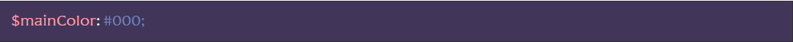

Налаштування сімейства, розміру та кольору шрифту за замовчуванням
Для того, щоб працювати зі шрифтами, спочатку потрібно їх підключити. Всі дії докладно описані у цій статті.
Після виконання дій щодо підключення шрифтів необхідно вказати значення для наступних змінних:
$fontFamily – ім’я сімейства шрифт за замовчуванням. Вказуємо ім’я основного шрифту у проекті.
$fontSize – розмір шрифту за замовчуванням. Цією змінною присвоєно одну із SCSS-функцій шаблону, вона виконує переклад пікселів у REM. Відповідно, у цю функцію слід передати значення розміру шрифту за замовчуванням у пікселях (тільки число без px).
mainColor– колір шрифту за замовчуванням. Вказуємо код кольору.
Налаштування адаптивної сітки
У ЧФ є можливість налаштувати обмежуючий контейнер на роботу як з адаптивною(чуйною) версткою, так і з версткою по брейкпоїнтах.
Перед початком робіт налаштовуємо наступні змінні:
$minWidth – мінімальна ширина вьюпорта (екрана), що підтримується проектом. Зазвичай це 320px, але з відмиранням старих пристроїв, це значення можна змінювати на будь-яке потрібне, вказуємо тільки число без px:
$maxWidth – ширина всього макета (полотна), не плутати з шириною контейнера, що обмежує. Як правило, дизайнери надають макети шириною 1920 чи 1440 пікселів, але це значення може бути будь-яким. Вимірюємо макет і вказуємо лише число без px:
$maxWidthContainer – ширина обмежуючого контейнера. Власне, це ширина контенту в макеті дизайну. Вимірюємо макет і вказуємо лише число без px:
Якщо в макеті немає обмеження контенту, тобто контент розташований на всю ширину полотна (з відступами), то слід вказати значення 0 (нуль):
$containerPadding – загальний відступ (сума відступів ліворуч і праворуч) у обмежуючого контейнера. Вказуємо лише число без px:
Якщо відступів немає, або ви хочете використовувати адаптивну властивість, слід вказати 0 (нуль):
$containerWidth – ширина спрацьовування першого брейкпоїнту. Власне, це сума ширин обмежуючого контейнера та його відступів. Як правило, міняти тут нічого не потрібно.
Вищезгадані змінні впливають і на функціонал чуйної властивості, який описаний в окремій статті
Налаштування брейкпоінтів
Змінним брейпоїнтам присвоєно одну з SCSS-функцій шаблону em(), вона виконує переведення пікселів у EM.
$pc – ПК, ноутбуки, деякі планшети в горизонтальному положенні. Як правило, тут вказується змінна $containerWidth:
$tablet – планшети, деякі телефони у горизонтальному положенні. Зазвичай значення дорівнює 991.98px:
$mobile– великі телефони. Зазвичай значення дорівнює 767.98px:
$mobileSmall – маленькі телефони. Зазвичай значення дорівнює 479.98px:

Для швидкого виклику медіа-запиту з потрібним брейкпоінтом можна використовувати сніпети md1, md2, md3, md4. Или, для Mobile First, mmd1, mmd2, mmd3, mmd4
Налаштування типу адаптива (поведінка обмежуючого контейнера)
$responsiveType – налаштування типу адаптива (поведінка обмежуючого контейнера):
- 1 – чуйна. У контейнера немає брейкпоінтів, він звужується разом із браузером
- 2 – по брейкпоїтам. Контейнер змінює свою ширину за налаштованими брейкпоїнтами.
Нижче у файлі стилів scss/style.scss вказано селектор обмежуючого контейнера та його стилі, значення яких багато в чому складаються з налаштованих вище змінних.
Стилі обмежувального контейнера будуть застосовуватися до будь-якого елемента, у класі якого є рядок “__container”. Для зручності можна використовувати сніпет cnt
Підключення додаткових файлів стилів
У файлі scss/style.scss вже підключено і можна підключати інші файли стилів. Порядок підключення має значення!
@use “sass:math”; – включає SASS-модуль математичних обчислень. Тепер ми можемо використовувати поділ за допомогою math.div(число, число).
@import “base/mixins”;– підключення міксинів, що використовуються в ЧФ. Файл scss/base/mixins.scss.
@import “base/null”;– підключення обнулення стилів. Файл scss/base/null.scss.
@import “base”; – підключення загального файлу базових стилів модулів ЧФ, SASS-шаблонів (заготовок) та допоміжних класів. Файл scss/base.scss для підключення/вимкнення конкретних стилів дивись scss/base.scss.
@import “common”;– підключення файлу стилів спільних елементів конкретного проекту. Файл scss/common.scss (спочатку порожній).
@import “header”; , @import “footer”;– підключення стилів окремих блоків (спочатку scss/header.scss и scss/footer.scss ). Ви можете доповнювати список підключенням своїх файлів
@import “home”;– підключення стилів окремих сторінок (спочатку scss/home.scss). Ви можете доповнювати список підключенням своїх файлів
Селектори та стилі
Спочатку у файлі стилів scss/style.scss є ряд SCSS-селекторів:
body {}стилі основного тега
частина з яких описана у файлі обнулення scss/base/null.scss. Також додано підготовку для появи у тега двох класів:- lock – блокування скролу. Для цього вже написано відповідні CSS-стилі
- loaded– сайт завантажений. За цим класом ми можемо впливати на для відображення контенту після повного завантаження даних
.wrapper {}– обгортка всього контенту на сторінці. Для неї написані стилі притискання підвалу до низу сторінки, важливий параметр overflow: hidden; який не дасть з’явитися горизонтальному скролу сторінки, а також вирішення проблеми для слайдерів усередині дочірніх flex-елементів.